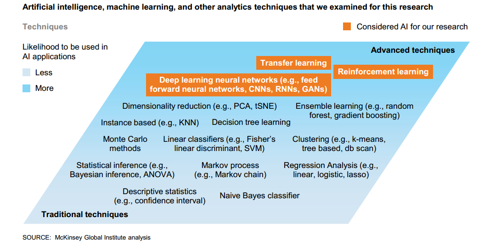
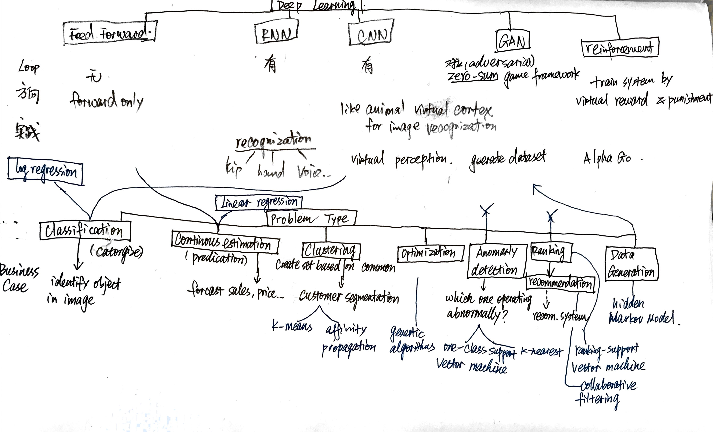

Reading Notes of 'The Ai Frontier Insights from Hundreds of Use Cases' by McKinsey Global Institute
Following contents are retrieve from https://www.mckinsey.com/featured-insights/artificial-intelligence/notes-from-the-ai-frontier-applications-and-value-of-deep-learning
Overview and Key Data
Data
The deep learning techniques on which we focused — feed forward neural networks, recurrent neural networks, and convolutional neural networks—account for about 40 percent of the annual value potentially created by all analytics techniques.
These three techniques together can potentially enable the creation of between $3.5 trillion and $5.8 trillion in value annually. Within industries, that is the equivalent of 1 to 9 percent of 2016 revenue.
The AI techniques we focus on are deep learning techniques based on artificial neural networks, which we see as generating as much as 40 percent of the total potential value that all analytics techniques could provide.
TWO-THIRDS OF THE OPPORTUNITIES TO USE AI ARE IN IMPROVING THE PERFORMANCE OF EXISTING ANALYTICS USE CASES
In 69 percent of the use cases we studied, deep neural networks can be used to improve performance beyond that provided by other analytic techniques. Cases in which only neural networks can be used, which we refer to here as greenfield cases, constituted just 16 percent of the total.
For the remaining 15 percent, artificial neural networks provided limited additional performance over other analytics techniques, among other reasons because of data limitations that made these cases unsuitable for deep learning.
Even the industry with the smallest potential value at stake, aerospace and defense (less than $50 billion) could enable the annual creation of value that is equivalent to the GDP of Lebanon.
In our use cases, for example, we found that using real-time data to predict hyper regional demand trends can increase sales by 0.25 percent to 0.75 percent, with margin improvements from lower waste and spoilage amounting to as much as half of one percentage point of sales. The impact can be considerably larger in pharmaceutical and medical products, in which predicting hyper-regional product demand and relevant health trends to inform inventory levels and reduce spoilage has the potential to raise sales by 5 to 10 percent.
Insights
Techniques that address classification, estimation, and clustering problems are currently the most widely applicable in the use cases.
The greatest potential for AI we have found is to create value in by established analytical techniques such as regression and classification , but where neural network techniques could provide higher performance or generate additional insights and applications.
The types of use cases with the greatest value potential vary by sector, and the effect is also affected by the availability of data, its suitability for available techniques, and the applicability of various techniques and algorithmic solutions.
Technical limitations include:
-
the need for a large volume and variety of often labeled training data
-
the scale of the potential economic and societal impact creates an imperative for all the participants—AI innovators, AI-using companies and policy-makers
-
Ultimately, the value of AI is not to be found in the models themselves, but in organizations’ abilities to harness them. Business leaders will need to prioritize and make careful choices about how, when, and where to deploy them, also taking into account concerns including data security, privacy, and potential issues of bias.
Neural Networks
Definitions
Neural networks are a subset of machine learning techniques. Essentially, they are AI systems based on simulating connected “neural units,” loosely modeling the way that neurons interact in the brain.
AI practitioners refer to these techniques as “deep learning,” since neural networks have many (“deep”) layers of simulated interconnected neurons. Before deep learning, neural networks often had only three to five layers and dozens of neurons; deep learning networks can have seven to ten or more layers, with simulated neurons numbering into the millions.
Different Networks


FFN
Feed forward neural networks. One of the most common types of artificial neural network. In this architecture, information moves in only one direction, forward, from the input layer, through the “hidden” layers, to the output layer. There are no loops in the network.
While the idea is not new, advances in computing power, training algorithms, and available data led to higher levels of performance than previously possible.
RNN
Recurrent neural networks (RNNs). Artificial neural networks whose connections between neurons include loops, well-suited for processing sequences of inputs, which makes them highly effective in a wide range of applications, from handwriting, to texts, to speech recognition.
CNN
Convolutional neural networks (CNNs). Artificial neural networks in which the connections between neural layers are inspired by the organization of the animal visual cortex, the portion of the brain that processes images, well suited for visual perception tasks.
Others
We estimated the potential of those three deep neural network techniques to create value, as well as other machine learning techniques such as tree-based ensemble learning, classifiers, and clustering, and traditional analytics such as dimensionality reduction and regression.
GAN
Generative adversarial networks (GANs). These usually use two neural networks contesting each other in a zero-sum game framework (thus “adversarial”). GANs can learn to mimic various distributions of data (for example text, speech, and images) and are therefore valuable in generating test datasets when these are not readily available.
Reinforcement Learning
Reinforcement learning. This is a subfield of machine learning in which systems are trained by receiving virtual “rewards” or “punishments,” essentially learning by trial and error. Google DeepMind has used reinforcement learning to develop systems that can play games, including video games and board games such as Go, better than human champions.
Problem Types
In a business setting, those analytic techniques can be applied to solve real-life problems.
Classification
Based on a set of training data, categorize new inputs as belonging to one of a set of categories. An example of classification is identifying whether an image contains a specific type of object,
Continuous Estimation
Based on a set of training data, estimate the next numeric value in a sequence. This type of problem is sometimes described as “prediction,” particularly when it is applied to time series data. One example of continuous estimation is forecasting the sales demand for a product.
Clustering
These problems require a system to create a set of categories, for which individual data instances have a set of common or similar characteristics. An example of clustering is creating a set of consumer segments based on data
All other Optimizations
These problems require a system to generate a set of outputs that optimize outcomes for a specific objective function (some of the other problem types can be considered types of optimization, so we describe these as “all other” optimization). Generating a route for a vehicle that creates the optimum combination of time and fuel use is an example of optimization.
Anomaly Detection
Given a training set of data, determine whether specific inputs are out of the ordinary.
Ranking
Ranking algorithms are used most often in information retrieval problems in which the results of a query or request needs to be ordered by some criterion. Recommendation systems suggesting next product to buy use these types of algorithms as a final step, sorting suggestions by relevance, before presenting the results to the user.
Recommendations
These systems provide recommendations, based on a set of training data. A common example of recommendations are systems that suggest the “next product to buy” for a customer.
Data generation
These problems require a system to generate appropriately novel data based on training data.
Predictive Maintenance
The power of machine learning to detect anomalies. Some existing predictive maintenance systems have analyzed time series data from Internet of Things (IoT) sensors, such as those monitoring temperature or vibration, in order to detect anomalies or make forecasts on the remaining useful life of components. Deep learning’s capacity to analyze very large amounts of high dimensional data can take this to a new level. By layering in additional data, such as audio and image data, from other sensors—including relatively cheap ones such as microphones and cameras—neural networks can enhance and possibly replace more traditional methods.
Evaluation of AI
Use case: the targeted application of digital technologies to a specific business challenge, with a measurable outcome.
AI-driven logistics optimization can reduce costs through real-time forecasts and behavioral coaching. Application of AI techniques such as continuous estimation to logistics can add substantial value across many sectors. AI can optimize routing of delivery traffic, thereby improving fuel efficiency and reducing delivery times.
Which Industry?
THE BIGGEST VALUE OPPORTUNITIES FOR AI ARE IN MARKETING AND SALES AND IN SUPPLY-CHAIN MANAGEMENT AND MANUFACTURING
AI can be a valuable tool for customer service management and personalized marketing. Improved speech recognition in call center management and call routing by applying AI techniques allow a more seamless experience for customers—and more efficient processing.
Among business functions, these techniques are for now mostly to be found in marketing and sales and in supply-chain management and manufacturing. In particular, feed forward neural networks feature as the main technique deployed in these two functions.
AI’s ability to conduct preventive maintenance and field force scheduling, as well as optimizing production and assembly processes, means that it also has considerable application possibilities and value potential across sectors including advanced electronics and semiconductors, automotive and assembly, chemicals, basic materials, transportation and logistics, oil and gas, pharmaceuticals and medical products, aerospace and defense, agriculture, and consumer packaged goods.
Personalize
In retail, marketing and sales is the area with the most significant potential value from AI, and within that function, pricing and promotion and customer service management are the main value areas. Our use cases show that using customer data to personalize promotions, for example, including tailoring individual offers every day, can lead to a 1 to 2 percent increase in incremental sales for brick-and-mortar retailers alone.
Forecast
Among the examples in our use cases, we see how forecasting based on underlying causal drivers of demand rather than prior outcomes can improve forecasting accuracy by 10 to 20 percent, which translates into a potential 5 percent reduction in inventory costs and revenue increases of 2 to 3 percent.
Greenfield AI
Greenfield AI solutions are prevalent in business areas such as customer service management, as well as among some industries in which the data are rich and voluminous and at times integrate human reactions.
A key differentiator that often underpins higher AI value potential is the possibility of applying large amounts of audio, video, image, and text data to these problems.
Among industries, we found many greenfield use cases in health care, in particular. Some of these cases involve disease diagnosis and improved care, and rely on rich data sets incorporating image and video inputs, including from MRIs.
In many of our use cases, however, traditional analytics and machine learning techniques continue to underpin a large percentage of the value creation potential in industries including insurance, pharmaceuticals and medical products, and telecommunications, with the potential of AI limited in certain contexts.
Requirements of Neutral Network Deployment
Data volume is essential for neural networks to achieve a high level of accuracy in training algorithms.
Most current AI models are trained through supervised learning, which requires humans to label and categorize the underlying data. However promising new techniques are emerging to overcome these data bottlenecks, such as reinforcement learning, generative adversarial networks, transfer learning, and one-shot learning.
One-shot learning allows a trained AI model to learn about a subject based on a small number of real world demonstrations or examples—and sometimes just one.
Fitting Issue
Even with large datasets, they will have to guard against over-fitting in which a model too tightly matches the “noisy” or random features of the training set, resulting in a corresponding lack of accuracy in future performance.
under-fitting, in which the model fails to capture all of the relevant features. Linking data across customer segments and channels and, where possible, to production data, rather than allowing different sets of data to languish in silos, is especially important to create value.
Realizing AI’s full potential requires a diverse range of data types including images, video, and audio Neural AI techniques excel at analyzing image, video, and audio data types because of their complex, multi-dimensional nature, known by practitioners as high dimensionality.
Collect Data
Ongoing data acquisition for retraining AI systems is necessary; one out of three use cases requires model refreshes at least monthly and sometimes daily highlight.
Risks & Mitigations
Prior research suggests that even among AI-aware firms, only about 20 percent are using one or more of the technologies in a core business process or at scale.
Limitations include the need for massive data sets, difficulties in explaining results, generalizing learning, and potential bias in data and algorithms
Need for massive data sets
Promising new techniques are emerging to address this challenge, such as reinforcement learning (discussed earlier) and in-stream supervision, in which data can be labeled in the course of natural usage.
Regulations
Among other constraints, regulators often want rules and choice criteria to be clearly explainable. Some nascent approaches to increasing model transparency, including local-interpretable-model-agnostic explanations (LIME), may help resolve this explanation challenge in many cases.
Ways of Adoption
Organizations planning to adopt significant deep learning efforts will need to consider a spectrum of options about how to do so. The range of options includes building a complete in-house AI capability either gradually in an organic way or more rapidly through acquisitions, outsourcing these capabilities, or leveraging AI-as-a-service offerings.
Culture Issue
Process can also become an impediment to successful adoption unless organizations are digitally mature. On the technical side, organizations will have to develop robust data maintenance and governance processes, and implement modern software disciplines such as Agile and DevOps.
Even more challenging, in terms of scale, is overcoming the “last mile” problem of making sure the superior insights provided by AI are instantiated in the behavior of the people and processes of an enterprise.
Speed Issue
A recent Stanford University study found that deep neural networks can make highly accurate bond price predictions, but took hours to come up with the answer, whereas other “simpler” techniques produced an answer that was only slightly less accurate but very rapid—just four seconds. 20 For a bond trader that timing difference is critical.
Sell & Buy AI
Many companies that develop or provide AI to others have considerable strength in the technology itself and the data scientists needed to make it work, but they can lack a deep understanding of end markets. This is a challenge, since our research has shown that most of the potential impact of AI comes from improving the performance in existing use cases—in other words, the fundamental drivers of the businesses of their potential customers.
Furthermore, many of these companies are asking how they should prioritize their resources, whether it is R&D, marketing and sales, or other functions to take advantage of AI opportunities.
More Research
Before launching more pilots or testing solutions, it is useful to step back and take a holistic approach to the issue, moving to create a prioritized portfolio of initiatives across the enterprise, including AI and the wider analytic and digital techniques available.